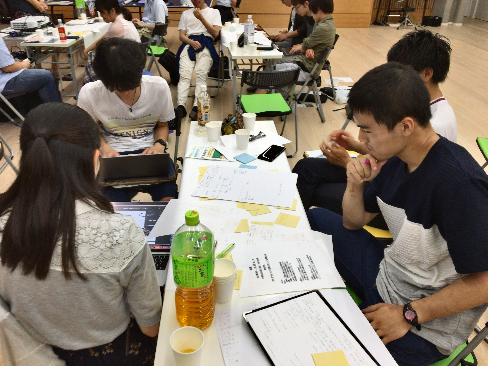
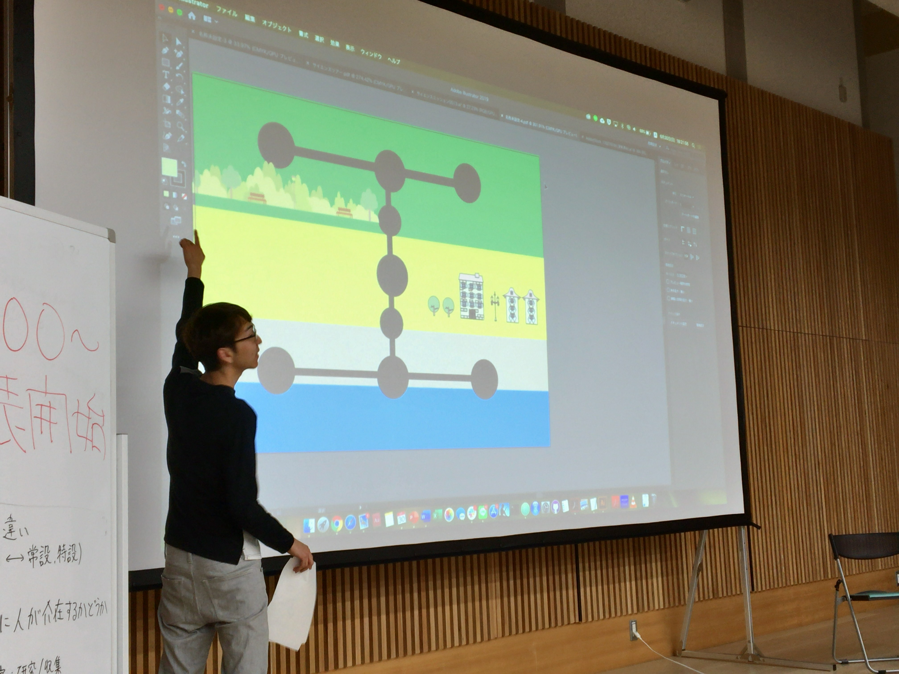

SCを考える会
紹介
SCを考える会は「多様なコミュニケーターの場を提供し、新たなSCのあり方を探求する」という理念のもとに2019年３月に生まれた会です。もともとは科学の公衆的理解を目的とされていたサイエンスコミュニケーションは、現在ではその手法はますます多様になりワークショップやデジタルメディアを通したものも現れています。また、サイエンスコミュニケーションは社会に対する理解・意思決定を支えるものとしても注目され、その内容においても多様になっています。しかしながら、その多様さ故にコミュニケーター同士の交流がそれほど多くはないというのも事実です。そこで、お互いの活動や理念を知り、それらの違いや共通点を議論しあい、それをもとに新たな活動を創り出すことのできる場をSCを考える会は目指しています。
活動報告

第１回（2019年3月開催）
第１回では、参加者が行ったことのある実験教室の体験談から話を広げ、 科学を伝えるメディアとして何が求められるのか？というテーマに至り、 SCにおけるメディアの重要性を再認識しました。
- 
- 
第2回（2019年6月開催）
科学を伝える"場"〜学校と科学館に迫る〜
第２回では、「科学を伝える場」として学校・科学館・サイエンスショーを取り上げ、それぞれの特徴や実践に当たっての想いなどを数名の方に語ってもらいました。各空間デザインの特徴を活かしたSCデザインがそれぞれ洗練されている様を過去の実践例をもとに振り返りました。また「科学館の無い地域に、科学を伝える新たな場を提案する」ことをテーマとして小グループに分かれて議論を行い、最後には各グループのアイディアを発表してもらいました。